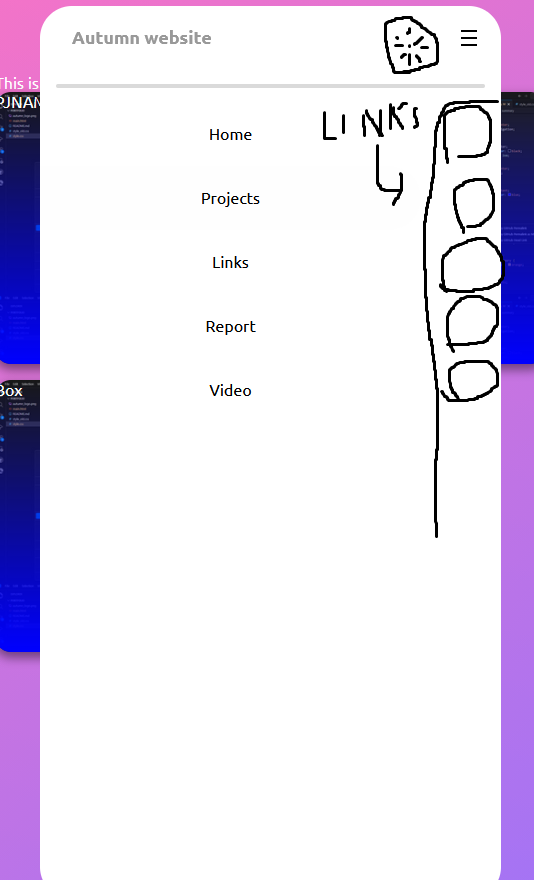
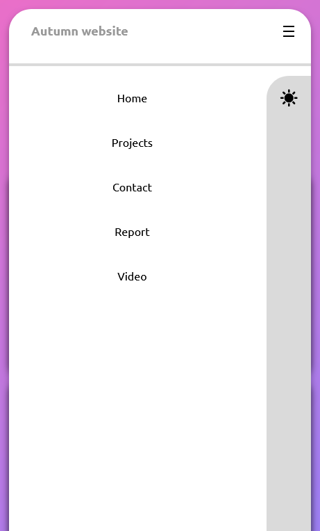
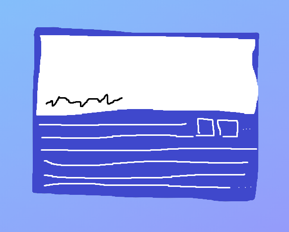
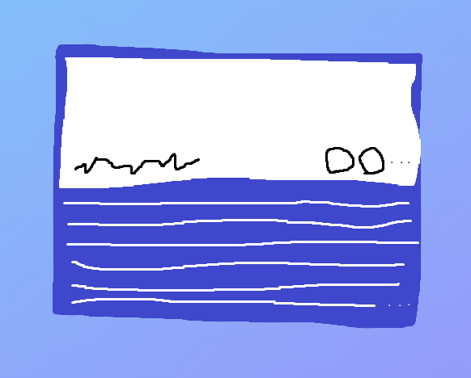
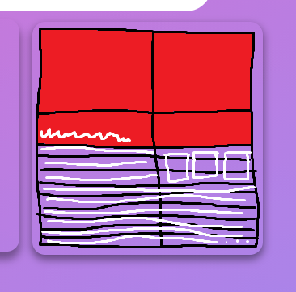
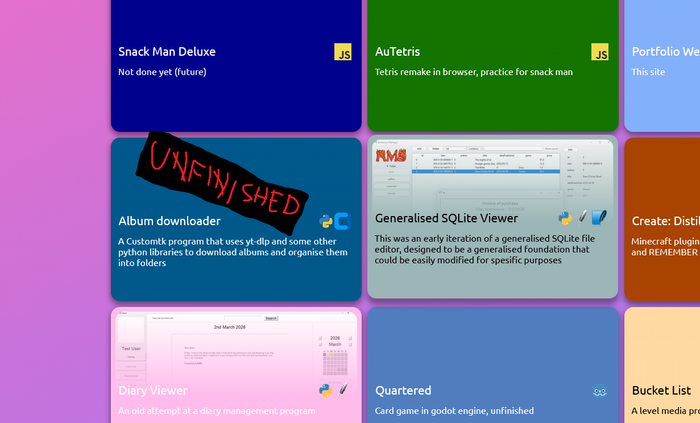
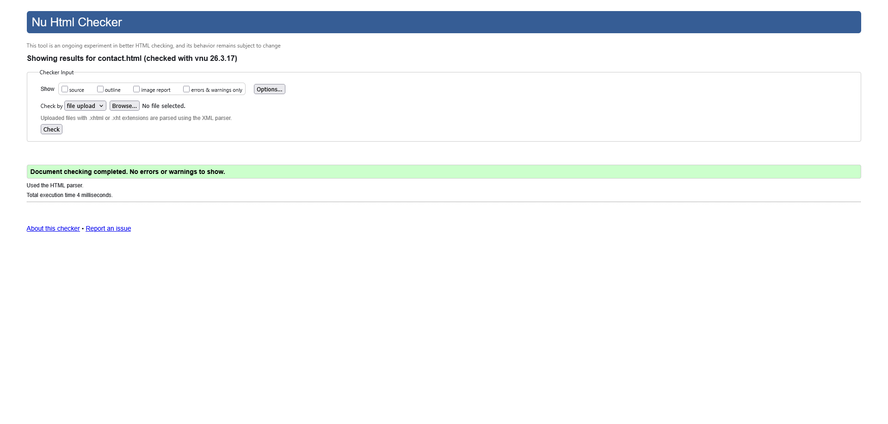
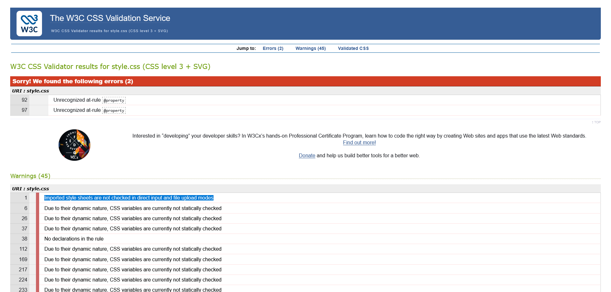

Report
Design & Implementation
Header & footer
This section includes the header, footer, and all other aspects of the site that are the same accross multiple pages
I moved the header bar out of the grid to allow it to use fixed and follow the screen, and used JS to create a nice shadow to stop it from blending with other white elements. The header and footer bars also autopopulates to stop me from reusing the code on every page.
Dark mode is implemented with variables in the body stylesheet, with javascript applying a class to body with a script
CSS darkmode
The darkmode value is also stored in the browser using localStorage:
JavaScript darkScript
When the screen is small enough, the darkmode button turns into a hamburger icon, which I coded a custom path for.
CSS clip_path


Projects page
The project page is a collection of my projects with info on the languages/technologies they use.



The grid autopopulates with JavaScript, rooting from a hardcoded list of objects in the js file. Before this, html is loaded from the resources folder of a blank project preview, this is then customised according to the data stored in the object, for example language icons are added.
JavaScript autoPopulate
Currently, clicking the projects does nothing, eventually it should either link to a page about the project or bring up a larger version.
I wanted to be able to distinguish between unfinished, abandoned, in progress, and other projects. For unfinished and abandoned projects spesifially, I wanted them to be hidden by default with a clear indication that they're unfinished.

Ironically, I didn't finish this feature.
Contact page
Originally I wanted seperate pages for links and a contact form, but I quickly realised this should be a single page.
The contact form uses javascript to create a more accurate mailto link, where all options are preserved, and the unix timestamp is sent as part of the subject line.
JavaScript mailto
Report page
The report uses lots of css to create the document styling, with a not-fully black colour in dark mode to be easier on the eyes, and to match word more closely.
CSS reportcss
The code snippets in this document are autopopulated with span elements, by using the content of the element as lanugage and identifier of the code snippet.
JavaScript snippet
I could possibly add a caption to them in the future, to the left of the language name.
Main page
I rushed the main page in the last few days of the assignment because I had no idea what to put there. I ended up adding a profile photo, a preview of my current active project, made by adding a condition to the normal projects-grid to only display one project if the content of the element is the identifier.
I also added a css-only ticker showing technologies I know, using an animation with a currently hardcoded value. It uses em instead of my usually preferred rem so it can be resized easier
CSS ticker
Reflection
HTML fustrated me due to its large amounts of redundant code when working on multiple pages. In an ideal world, a parent file could be created which contained the header, background, footer, and other consistant elements, and child/instance pages would simpily add elements to the body tag. I'm sure some framework like this exists, and I'll probably research and use one like it next time I have a project with more freedom to. On the other hand, css is a very nice language to work with, as it's clearly made with deduplication in mind.
Working with git branches has felt a little pointless, as I ususally end up altering multiple features in single commits. I imagine they're more useful when working on a larger project and/or in a group
Working on the report has been a bit more annoying in html than it would've in markdown or word, I think because the headings don't stand out, though I do prefer the amount of control and usaility on my Linux laptop. In the future I could use LaTeX or markdown (I could possibly create a custom 'autumn flavoured' markdown with a few features like groups of images with captions that I find annoyingly missing from the normal version).
Like my other projects, this one too involved a slight crunch at the end, though less than others. This is likely due to me putting less work into this project than others, as well as the project being so closely tied to my identity that I ended up disliking many aspects of it by the end.
Validation proofs
IMPORTANT NOTE ABOUT VALIDATION
The @property at-rule which is used for my animated background fails the validation tests, however identical code snippets on w3c and mdn also fail validators, for that reason I'm pretty sure the validators have just not been updated to support @property, as it's newly baseline according to mdn.


Note: HTML Resources like the header and project templates are not listed here